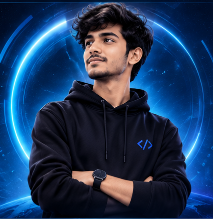

My approach
Understand the problem → build a useful solution → test and improve.
HELLO, I'M PRINCE KUMAR MODI
B.Tech Computer Science student, curious developer, and hands-on learner. I enjoy solving problems, building useful digital experiences, and exploring how technology can make everyday work better.

I’m a Computer Science student who believes the best way to learn technology is to build with it.
I’m developing my skills in programming, web development, databases, and cloud computing. I like breaking a challenge into smaller parts, experimenting with solutions, and improving through feedback. Hackathons excite me because they bring ideas, teamwork, and execution together under one deadline.
Understand the problem → build a useful solution → test and improve.
Practical software, thoughtful user experiences, and cloud fundamentals.
Grow into an engineer who turns real needs into reliable technology.
A growing toolkit — strongest when paired with curiosity and consistent practice.
C++ · Python
HTML · CSS · JavaScript
MongoDB
AWS fundamentals
Git · GitHub · VS Code
NOTE Progress bars are visual indicators of my current learning focus, not formal proficiency ratings.
A project I can share today, plus the portfolio you’re viewing.
A business and GST accounting software project aimed at making billing and everyday business operations easier to manage.
A responsive portfolio built to present my background, technical interests, project work, and contact links.
Project descriptions are concise summaries. Visit the repositories for implementation details and the latest source code.
ABES Engineering College · Expected graduation 2029
Completed Python-focused training to strengthen my programming foundation.
Practising problem-solving and exploring web development, databases, and AWS.
I bring curiosity, a willingness to learn, and a practical mindset to collaborative problem-solving. I’m excited to work with people who turn ambitious ideas into prototypes that matter.
Open to hackathon teams, project collaborations, learning opportunities, and meaningful conversations about technology.